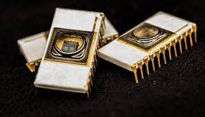

EEPROM is a type of read only memory that can be erased and reprogrammed repeatedly . it is erased and reprogrammed electrically without using ultraviolet light.the data in this memory are written or erased one byte at a time. the BIOS(basic input output system) is also stored in this ROM.
